01 · 地貌探索 / 默认首页
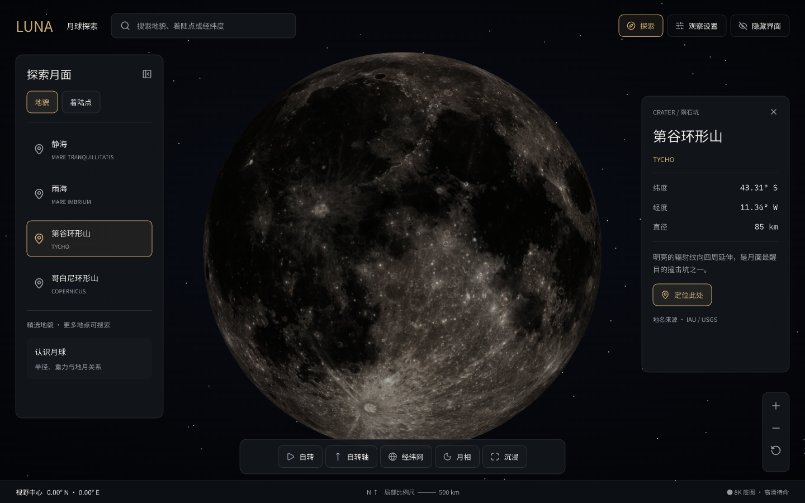
Pen 节点：T9MKxz · 1440 × 900
02 · 着陆点探索
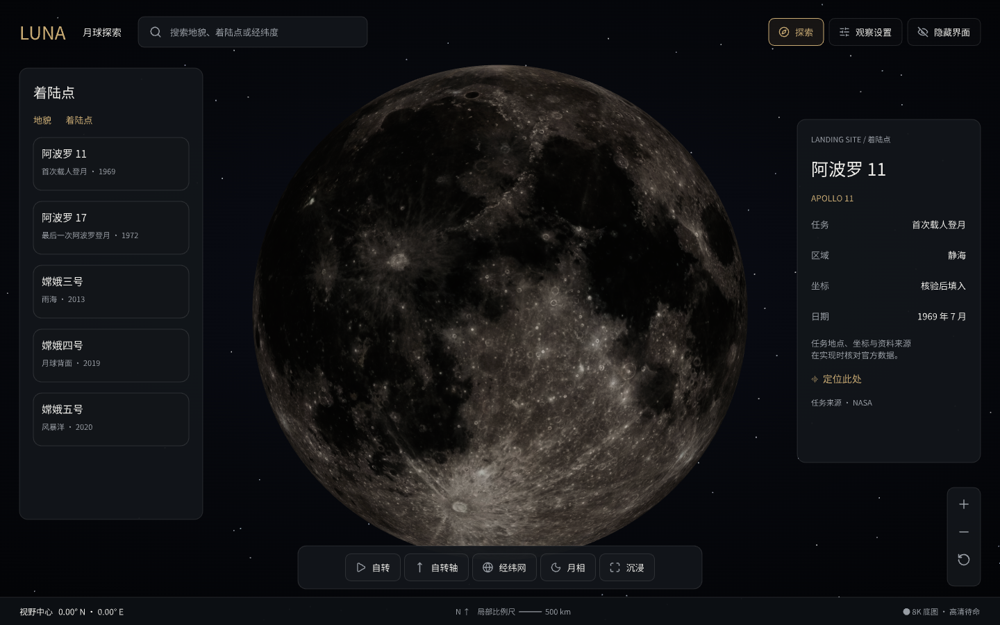
Pen 节点：iSGZ0 · 1440 × 900
03 · 搜索与坐标定位
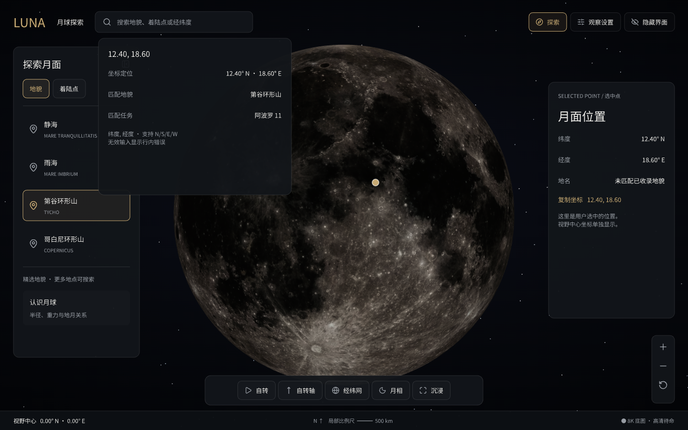
Pen 节点：jVKpl · 1440 × 900
04 · 观察设置
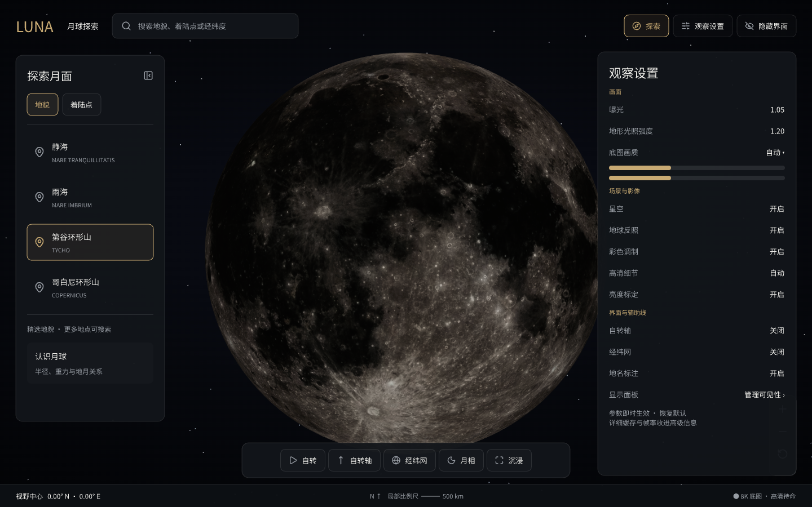
Pen 节点：bivcu · 1440 × 900
05 · 自转轴开启
Pen 节点：sgbl9 · 1440 × 900
06 · 经纬网开启
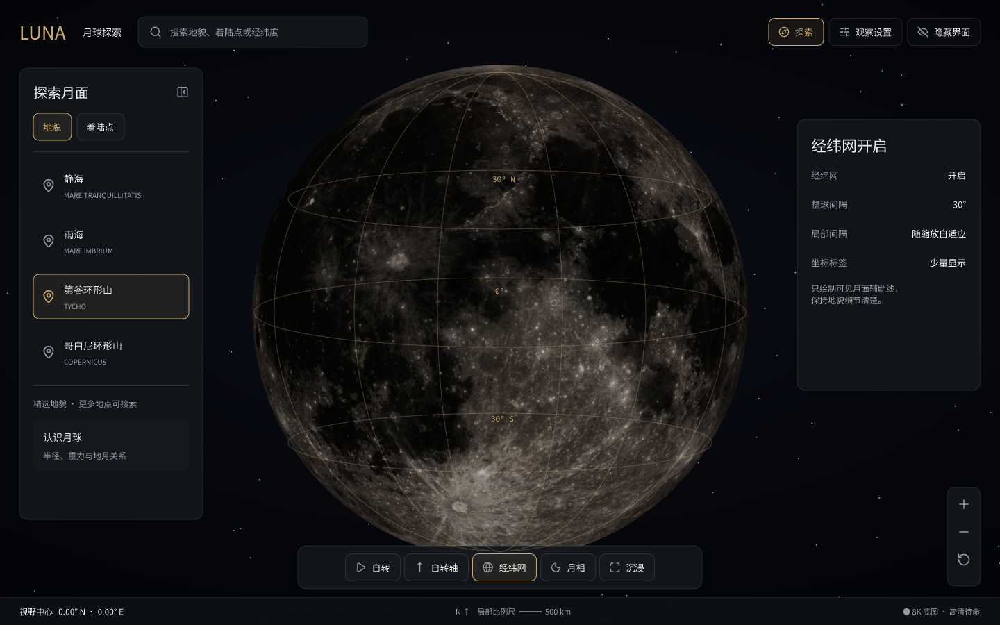
Pen 节点：ECAeh · 1440 × 900
07 · 模拟月相
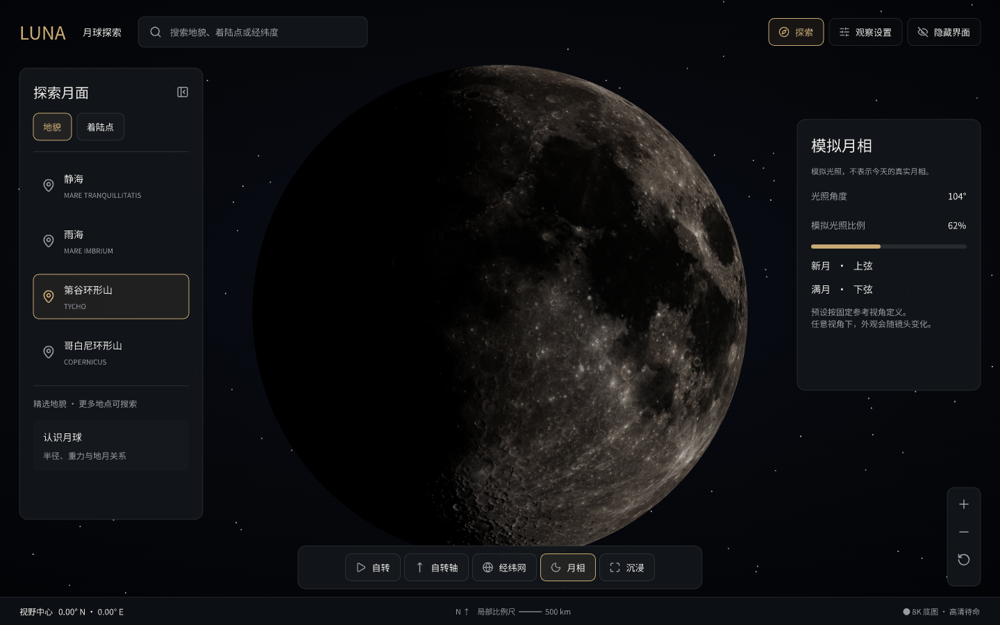
Pen 节点：q1brAX · 1440 × 900
08 · 自转控制
Pen 节点：iSt9e · 1440 × 900
09 · 图层与影像选项
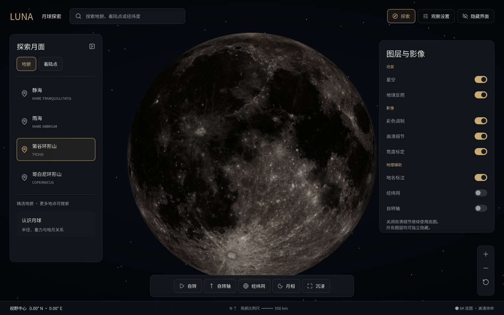
Pen 节点：TqZs1 · 1440 × 900
10 · 画质与高级数据
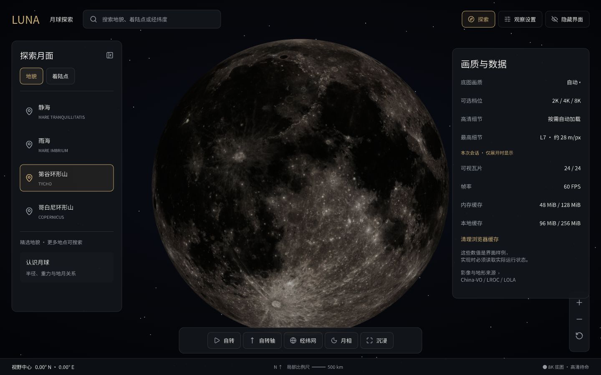
Pen 节点：VjGmA · 1440 × 900
11 · 面板可见性管理
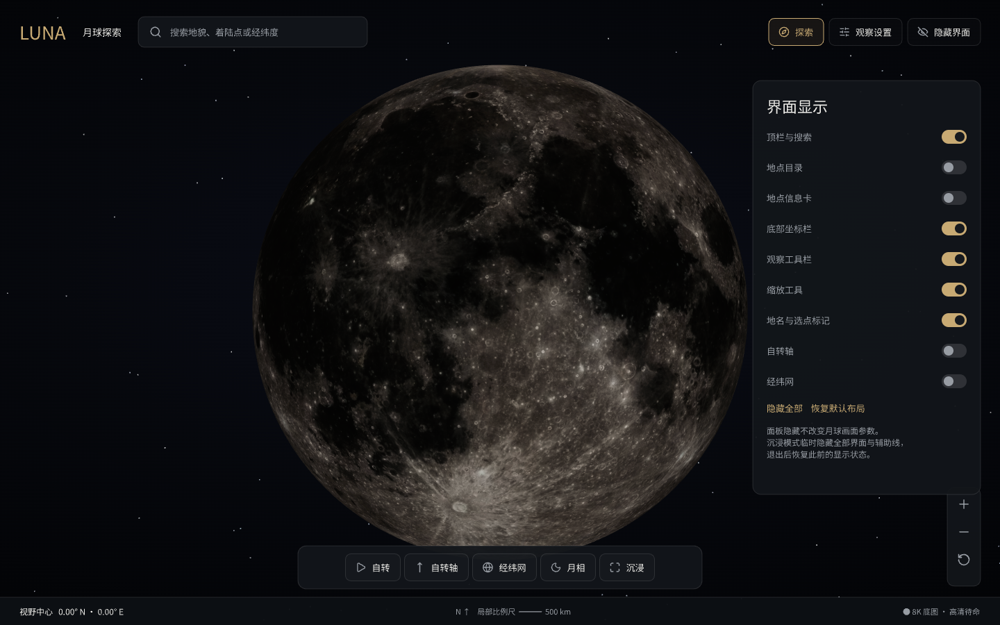
Pen 节点：D9GG1D · 1440 × 900
12 · 沉浸 / 全部隐藏
Pen 节点：xexF4 · 1440 × 900
13 · 沉浸 / 临时恢复入口
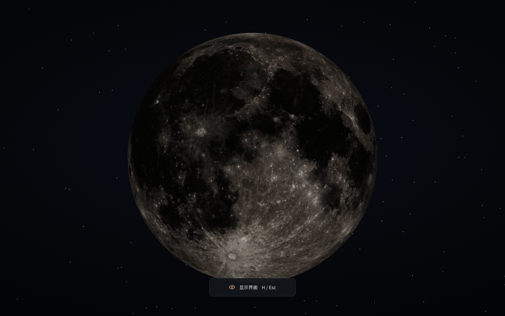
Pen 节点：FNeeL · 1440 × 900
14 · 月球概览
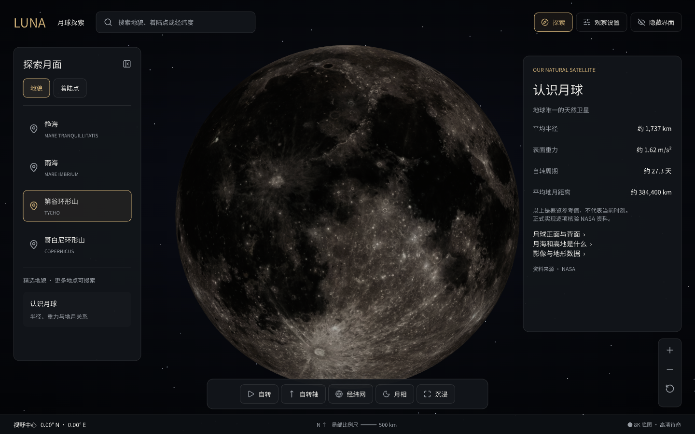
Pen 节点：IbYpb · 1440 × 900
15 · 手机 / 月面探索
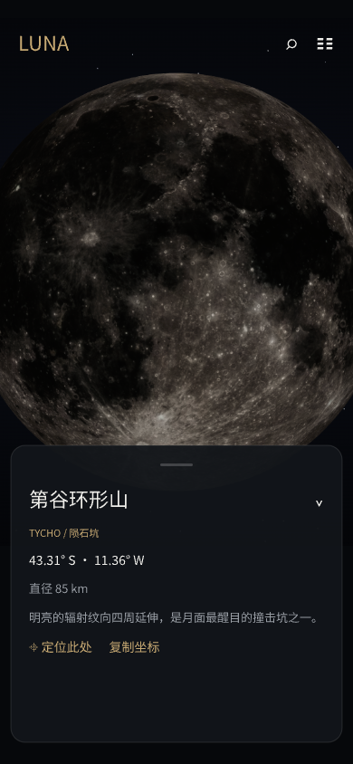
Pen 节点：KgaJF · 390 × 844
16 · 手机 / 观察设置
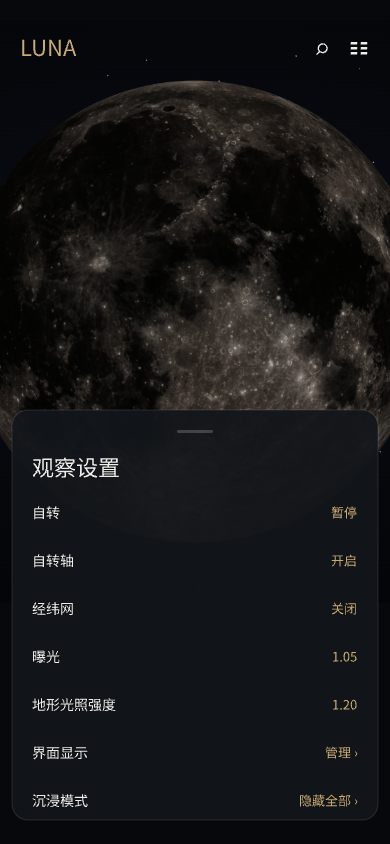
Pen 节点：MycK5 · 390 × 844
17 · 组件与异常状态规范
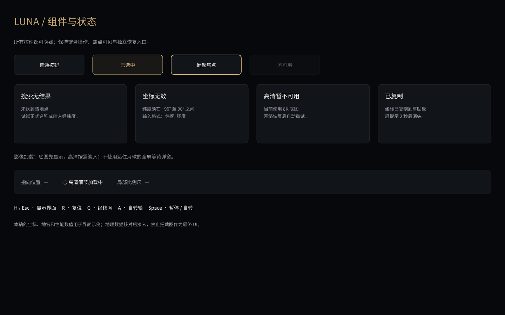
Pen 节点：JkTd7 · 1440 × 900